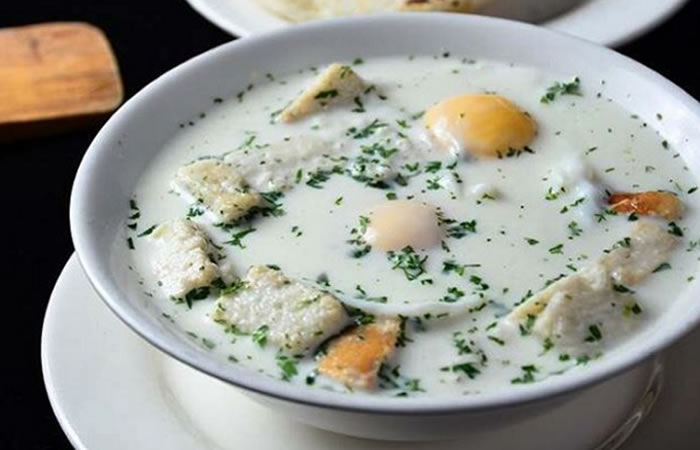

Changua recipe

The Changua is one of the most characteristic dishes in the colombian capital, being hated and loved for much people.
The principal reason is because is a milk-based soup, this can sound very weird for some people but it has a very good flavor.
Ingredients:
- 3 cups 2% milk
- 3 cups water
- 4 large eggs
- 1/4 cup chopped fresh cilantro, plus more for garnish (stems and leaves)
- 3 medium scallions, chopped
- kosher salt and fresh cracked pepper, to taste
- crusty toasted bread (if you want to make a traditional changua use "calado"), optional for serving
Instructions:
- Boil milk and water in a pot, then add scallions, salt, and pepper, cooking for 3 minutes.
- Lower the heat to medium and gently add the eggs, keeping the yolks intact.
- Poach the eggs for 3 minutes, or longer for a firmer center, then add cilantro.
- To serve, gently place an egg in four shallow bowls, then ladle in the soup, about 1 1/2 cups each. Serve warm with toasted bread on the side and garnish with more fresh cilantro.
Return to the main page